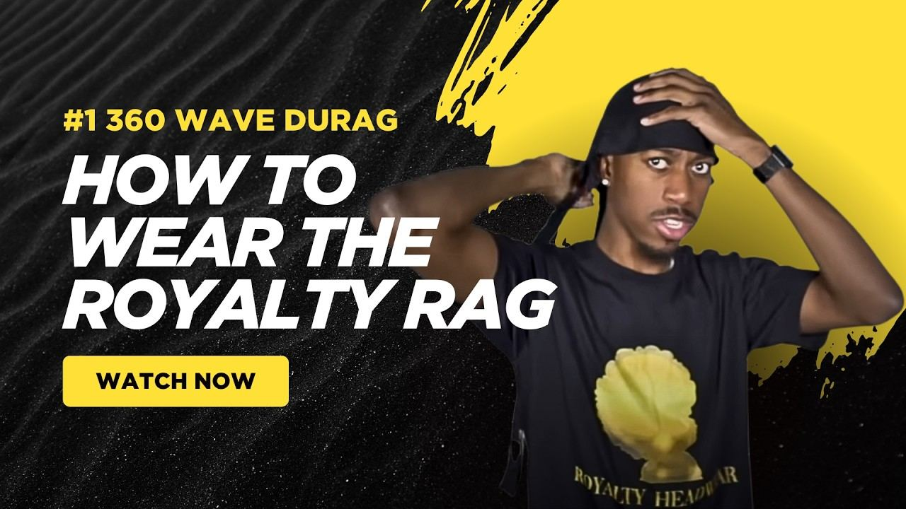

Custom Print Durags: Designing, Printing, and What to Check Before You Buy
Custom prints turned the durag into a canvas — logos, artwork, flags, tributes, whole aesthetics wrapped around the crown. Done well, a printed durag is the most personal piece in a rotation. Done badly, it cracks, fades, and misaligns by the third wear. Royalty Headwear's (@royaltyheadwear318) fit video below is a reminder of the physical canvas involved — a curved, tied, moving surface. This guide covers print methods, design placement, and the buyer checks that separate a premium custom from a disposable one.
Print methods: sublimation vs surface print
Most custom durags are sublimation printed: the design is heat-infused into polyester fabric, so the art becomes part of the material — it cannot crack or peel, it stretches with the fabric, and the colours stay vivid through washing. On silky polyester, sublimation is the correct technology, and it is why the custom market exploded when it did.
Surface prints — ink sitting on top of the fabric — are the budget alternative and behave like it: stiff hand-feel, cracking across stretch points, fading at friction zones. For a durag that gets tied nightly, surface print is a short story. When buying custom, ask the method directly; a seller who cannot answer is telling you the answer.
Designing for a curved, tied canvas
A durag is not a t-shirt. The centre panel wraps the crown, the tails stretch and move, and half the surface disappears into the tie. Designs that work place the hero element on the crown panel where it stays visible, treat the tails as a secondary zone (patterns, text, gradients survive tying better than detailed art), and keep critical details away from the centre seam, where alignment never survives sewing perfectly.
All-over patterns are the forgiving choice — misalignment is invisible in a pattern. Single centred graphics are the demanding choice: demand a mock-up or photo of the actual sewn product, because a flat art file and a tied durag are two different countries. Reputable custom sellers show the finished, worn product for exactly this reason.
Buyer checks before you pay
Check: the print method (sublimation), the base fabric quality underneath the print (a great print on a bargain durag is still a bargain durag — tails, seam, and band standards all still apply), the care instructions (sublimation wants the same gentle cool wash as any silky), and the seller's real photos of finished pieces.
A custom durag is a commission, not a commodity. Buy it like one — from someone who shows their construction, states their method, and stands behind the seams. Then wear the art the way it was meant to be worn: like you designed the fit around it, because you did.
Watch: how a finished durag should sit and drape, from Royalty Headwear — the canvas your print has to work on
Video: “How to Wear the Royalty Rag” by Royalty Headwear (@royaltyheadwear318) · Watch on YouTube
Shop the gear
Everything in this guide runs on the right gear: a durag that holds compression without slipping, a cap that stays put, and fabric that treats your hair right. The durag.store launch lineup is built to that standard — dual-layer construction, long tails, and stitching made to survive the routine. Join the launch list and use code GOLDSTANDARD for 15% off your first order.
Keep learning
- Styling a Durag With Outfits: Colour, Fabric and Occasion — Intermediate · Styling & Culture
- Choosing Durag Colours: What Works With Your Skin, Hair and Wardrobe — Basic · Styling & Culture
- History of the Durag: From Workwear to Wave Culture Icon — Intermediate · Styling & Culture
Sources: Video — “How to Wear the Royalty Rag” by Royalty Headwear (@royaltyheadwear318), youtube.com. Guide written by the durag.store Wave Lab.